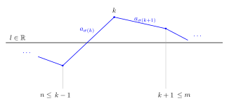
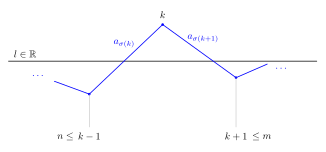

Chapter 5 Notes¶
Note exercise 5.19 gives us key results and notation:
Let
Therefore
In 5.19 we showed that if \(\sum_{j=1}^{\infty} a_j\) is convergent but not absolutely convergent then both \(\sum_{j=1}^{\infty} a_{j}^{+}\) and \(\sum_{j=1}^{\infty} a_{j}^{-}\) diverge.
In other words.
\(S_n\) converges and \(\lvert S \rvert_{n}\) not converging implies that both \(S_{n}^{+}\) and \(S_{n}^{-}\) do not converge.
Exercise 5.21¶
Suppose that \(\sum_{j=1}^{\infty} a_{j}\) is convergent but not absolutely convergent.
Let \(l \in \mathbb{R}\) and,
We then inductively define \(\sigma : \mathbb{N} \to \mathbb{N}\) for each \(n \in \mathbb{N}\),
let \(\tilde{S}_{n} \coloneqq \sum_{j=1}^{n} a_{\sigma(j)}\) , \(\tilde{S}_{\infty} \coloneqq \lim_{n \to \infty} \tilde{S}_{n}\) and \(\tilde{S}_{0} \coloneqq 0\),
In other words if the sum is above \(l\) pick the next negative term and vice versa.
[ii] \(\sigma\) is a permutation¶
Solution¶
Because neither \(S_{n}^{+}\) or \(S_{n}^{-}\) converge there are infinitely many terms such that \(a_{j}^{+}\) and \(a_{j}^{-}\) are non zero. Therefore both \(S(0), T(0)\) are infinite and the construction is able to pick \(\sigma(n)\) at each stage.
[iii]¶
Let \(n \in \mathbb{N}\), if,
- \(\kappa > |a_r|\) for all \(r \in S(n) \cup T(n)\)
- \(m > n\) and \(S(m) \neq S(n)\), \(T(m) \neq T(n)\)
show that \(|\sum_{j=1}^{m} a_{\sigma(j)} - l| < \kappa\).
(It may be helpful to consider what happens when \(\sum_{j=1}^{m} a_{\sigma(j)} - l\) changes sign.)
Solution¶
\(S(m) \neq S(n)\), \(T(m) \neq T(n)\)
\(\iff\)
there exists \(k\) such that \(n<k<m\) and \(a_{\sigma(k)}, a_{\sigma(k+1)}\) have different sign.
Let \(k\) be the greatest interger less than \(m\) where this occurs.
Assume that \(\hat{S}_k \geq l\). The \(<l\) case is a very similar proof.
Therefore by sign change \(\hat{S}_{k-1} < l\)
Notice that
\(S(n) \cup T(n) = \mathbb{N} \setminus \left\{ \sigma(1), \dots \sigma(n) \right\} = \left\{ \sigma(n+1), \sigma(n+2), \dots \right\}\)
There are then two sub cases to consider:
Case 1¶
\(\hat{S}_{k+1} > l\)

\(\hat{S}_{k-1} < l\)
\(\implies \hat{S}_{k-1} + a_{\sigma(k)} < l + a_{\sigma(k)} \implies \hat{S}_{k} - l < a_{\sigma(k)}\)
So \(0 \leq S_{k} -l < a_{\sigma(k)}\)
Because \(k\) is the last integer \(<m\) where \(a_{\sigma(k)}, a_{\sigma(k+1)}\) have different signs, it holds that \(a_{\sigma(j)} > 0\) for all \(j \in \left\{ k+1, \dots, m \right\}\).
So \(0 \leq \hat{S}_{j} - l \leq \hat{S}_{k} - l < a_{\sigma(k)}\) for all \(j \in \left\{ k+1, \dots, m \right\}\)
Case 2¶
\(\hat{S}_{k+1} \leq l\)
